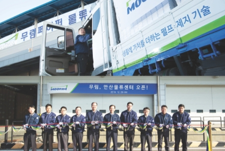
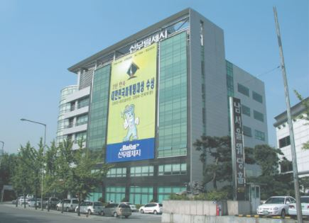
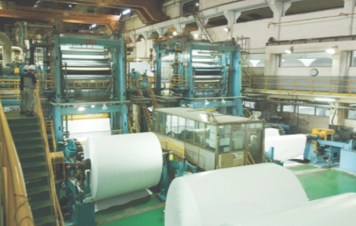
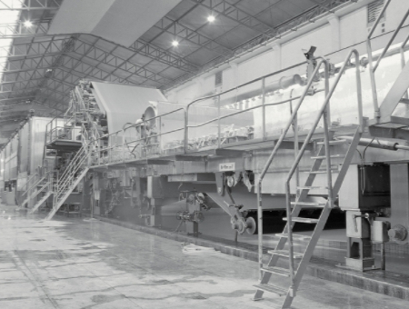
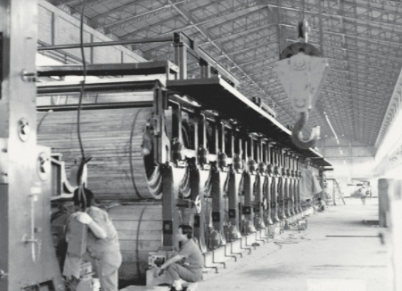
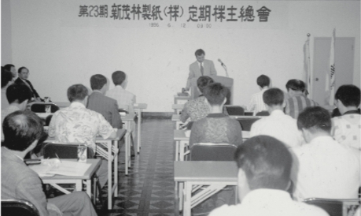

HOME > 회사정보 > 연혁
연혁
2006~
비상 : 창립반세기, Bridging the Future
- 2016.05대한출판문화협회와 상생협약체결
- 2016.04안전문화대상 대통령상 수상
- 2015.11'저탄소 제품' 최다 인증
- 2015.09무림P&P, 업계 최초 저탄소제품 인증 획득
- 2015.07무림P&P, 대한민국 고용창출 100대기업 선정
- 2014.01무림페이퍼, 경남메세나 대상 수상
- 2013.12무림SP, 노사문화대상 수상
- 2012.11무림인터내셔널 해외조림사업 계약
- 2011.12무림인터내셔널 설립
- 2011.05두바이사무소 개설
- 2011.03무림SP 한국조폐공사와 사업, 기술업무 MOU체결
- 2010.07무림페이퍼 PEFC 인증 취득
- 2010.02펄프-제지 일관화공장 기공식
- 2009.11무림SP FSC 인증 취득
- 2008.08무림페이퍼 동해펄프 M&A 우선 협상자 선정
- 2007.03무림페이퍼 FSC 인증 취득
- 2007.016년 연속 생산성 세계 No.1 달성
- 2006.12무림SP'2006 대한민국 노사문화 대상' 국무총리상 수상
- 2006.07창립50주년, '무림'으로 사명통합, 새 CI 선포


1997~2005
성장 : 진주 3호기 발판 세계적 제지회사로 발돋움
- 2005.04신무림제지 환경마크 인증
- 2004.12신무림제지 중국 장시 첸밍제지 경량코팅용지(LWC) 공장 투자 계약
- 2004.05무림제지-중국 후루도시 투자의향서(MOU) 체결(조림 및 환경사업)
- 2004.03신무림제지 진주공장 3호기 준공
- 2003.03김인중 사장-신무림 제지 대표이사 취임
- 2001.062년 연속 대한민국마케팅대상 수상
- 2000.11무림UK 설립
- 1999.11신무립제지-첸밍제지, 투자양해각서(MOU) 체결 무림켐텍(주) 설립
- 1998.11제37회 무역의 날 '1억불 수출의 탑' 수상
- 1998.09무림제지 중국 후루도무화목업유한공사 설립
- 1997.06신무림제지 곤암 물류센터 완공
- 1997.04신무림제지 ISO 14001:2004 인증획득

1990~1996
발전 : 이동욱 호(號) 출범, 아트지 시장 최강자 등극
- 1996.11오피스웨이(주) 설립
- 1996.07창립 40주년, 비전 '무림 2005-세계와 함께 가는 무림' 선포
- 1995.09 이원수 대표이사 부사장 취임
- 1995.03신동에너지(주) 설립
- 1994.09무림물류(주) 설립
- 1991.10진주공장 PM, CM2호기 가동획득

1978~1989
도약 : 종합 제지회사로 거듭나다
- 1989.06본사 사옥 준공, 이동욱 회장 취임
- 1987.11무림USA 설립
- 1986.12제지연구소 설립
- 1980.10이동욱 대표이사 사장 취임
- 1979.11신무림제지(주)로 사명 변경
- 1979.09진주공장 PM 1호기 가동

1960~1977
개척 : '무림'으로 새출발, 제지산업 성장 선도
- 1977.09대구공장 PM 2호기 가동
- 1975.12동서펄프공업(주) (신무림제지 전선) 설립
- 1969.06대구공장 CM 1호기 가동
- 1966.09대구공장 슈퍼캘린더 설치

1956~1959
창업 : 창업주 송파 이무일 회장 양지시대 개막
- 1959.09대구공장 PM 1호기 가동
- 1958.01청구제지 이무일 회장 취임
- 1956.07청구제지(무림제지 전신) 설립